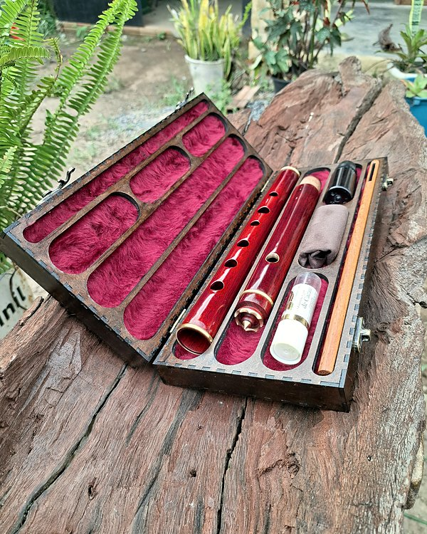
Estojos
Faço o estojo sob medida, com a flauta aqui na bancada: um berço para cada parte e lugar para o kit de limpeza. Por isso não faço estojo para flauta que não está comigo.
Como é feito
Em madeira ou MDF, com forro de veludo ou de pelúcia, dobradiças e fecho de metal. A tampa pode levar filetes, marchetaria ou gravação a laser.
Todo estojo já vem com o kit de limpeza dentro: vareta, microfibra e óleo. O kit sozinho custa R$ 90.

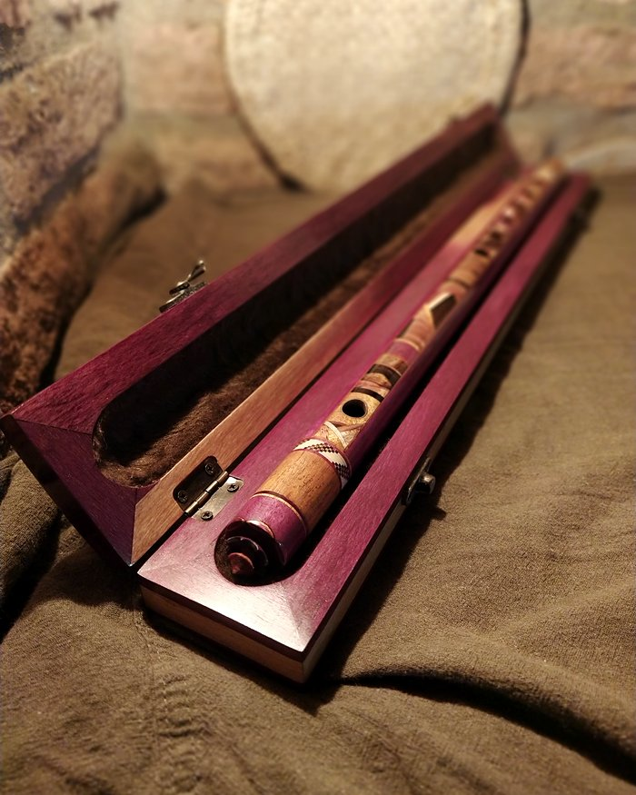

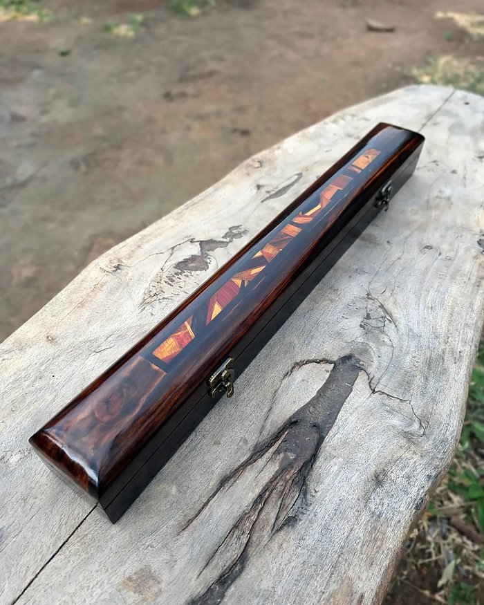

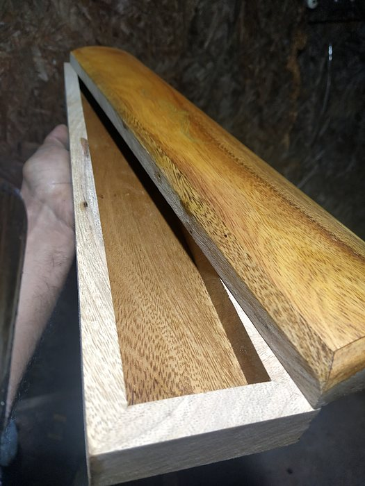

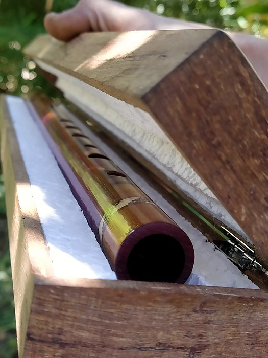

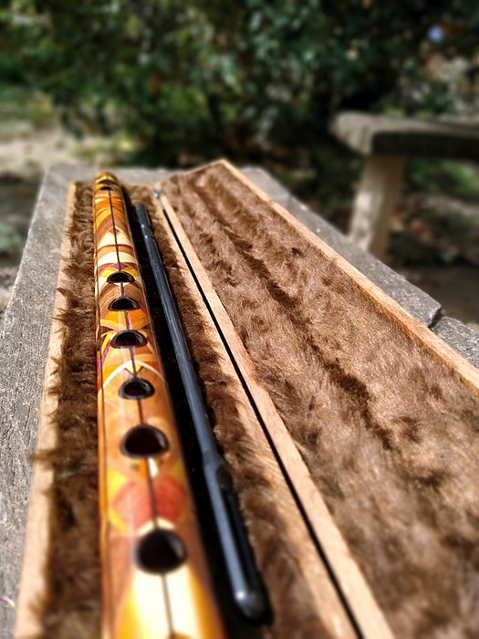

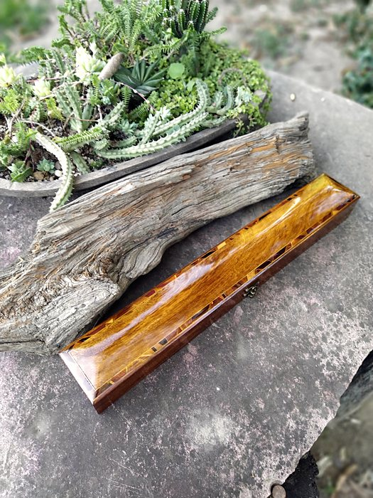


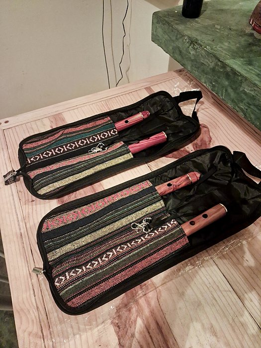

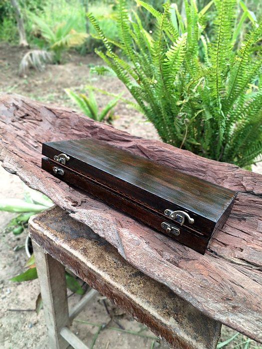

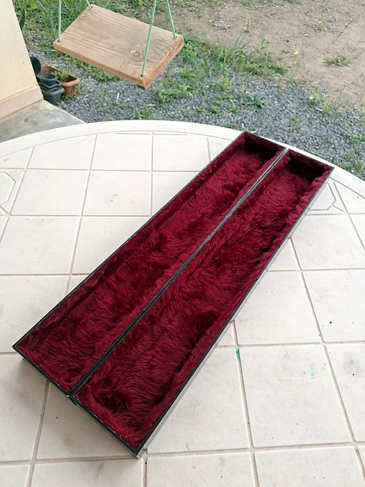

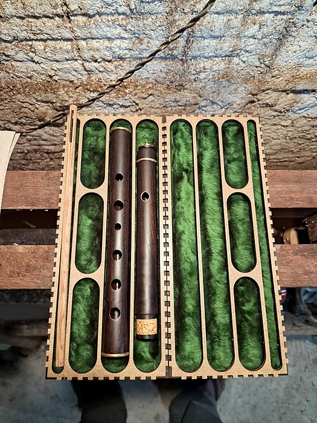

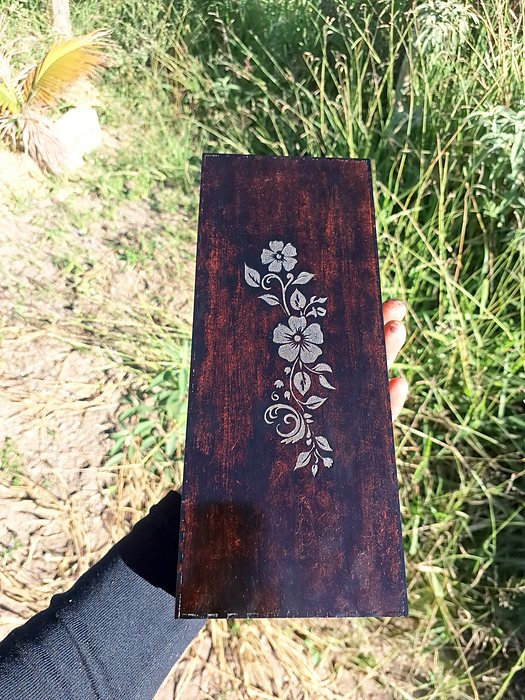

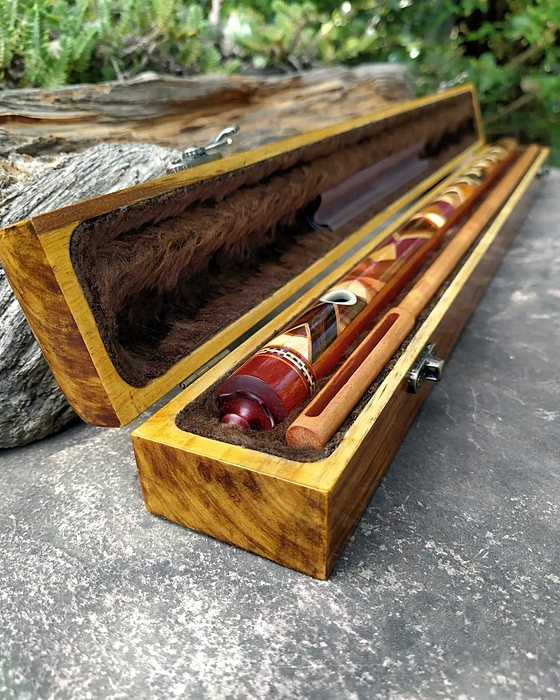

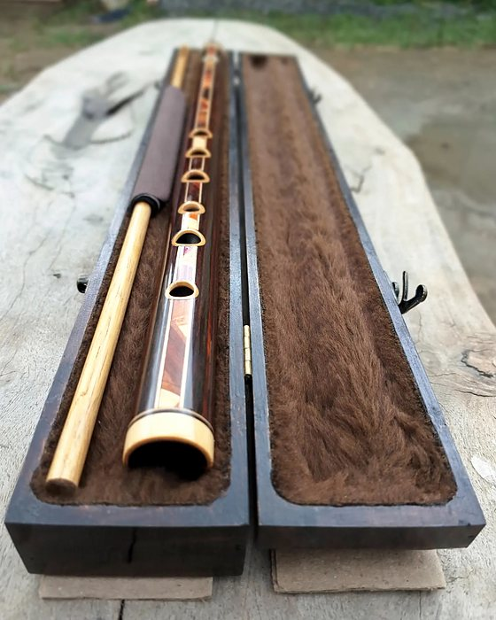

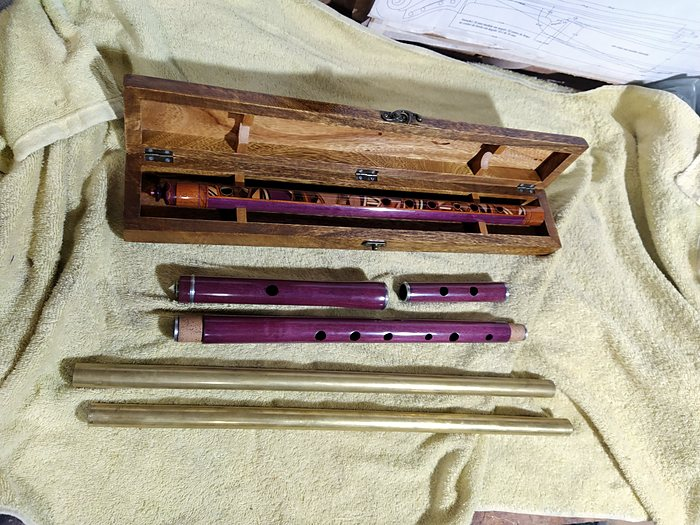

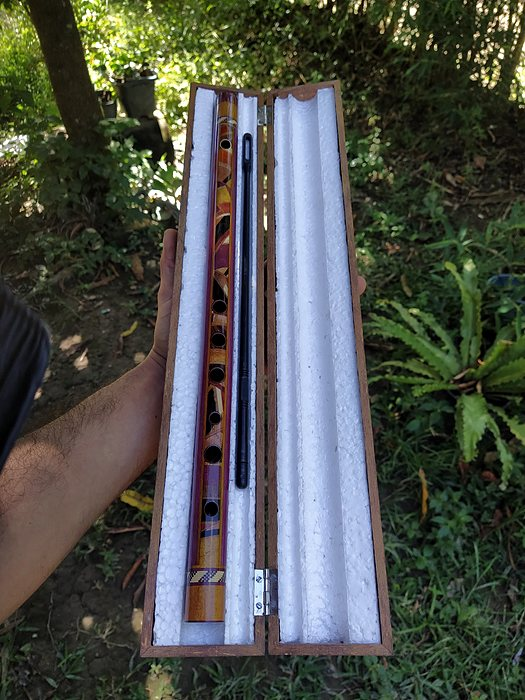

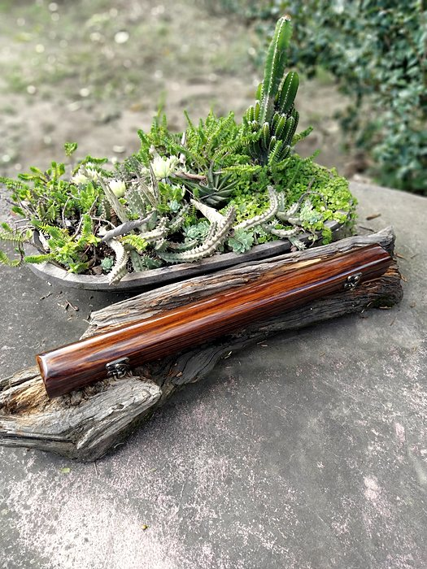

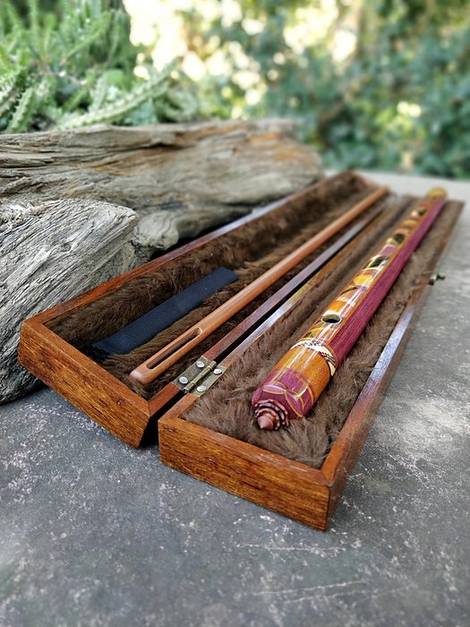
Toque numa foto para ampliar e passar as outras.
Valores
O estojo acompanha o tamanho da flauta: o valor muda com o tom e com o número de partes.
Estojo completo, com kit de limpeza
- Flauta de corpo único, em Ré agudo, Dó, Dó#, Si, Lá, Lá#, Sol ou Sol#R$ 350
- Flauta de corpo único, em Fá ou Fá#R$ 390
- Flauta de corpo único, em MiR$ 420
- Flauta de corpo único, em Ré graveR$ 450
- Flauta em 2 partesR$ 550
- Flauta em 3 partesR$ 670
- Só o kit de limpezavareta, microfibra e óleoR$ 90
Frete à parte, calculado pelo CEP.